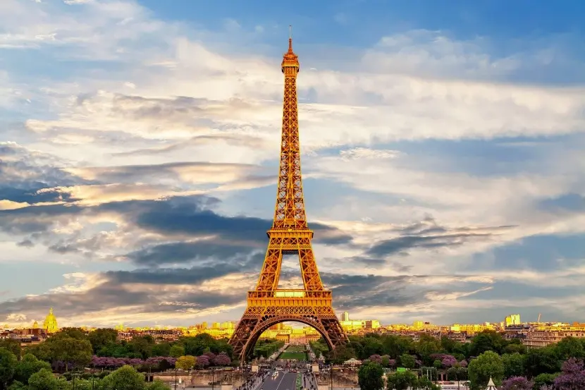

WirtualnyŚwiatPodróży.pl

Wakacje w Paryżu to podróż do serca francuskiej romantycznej stolicy, gdzie historia spotyka się z nowoczesnością, a kultura kwitnie na każdym rogu ulicy. Zwiedzanie Paryża to podróż przez wieki sztuki, mody i kulinariów. Spacerując uliczkami miasta świateł, odkryjesz majestatyczne zabytki takie jak Wieża Eiffla, Luwr czy Katedra Notre-Dame.
Powrót do strony głównej